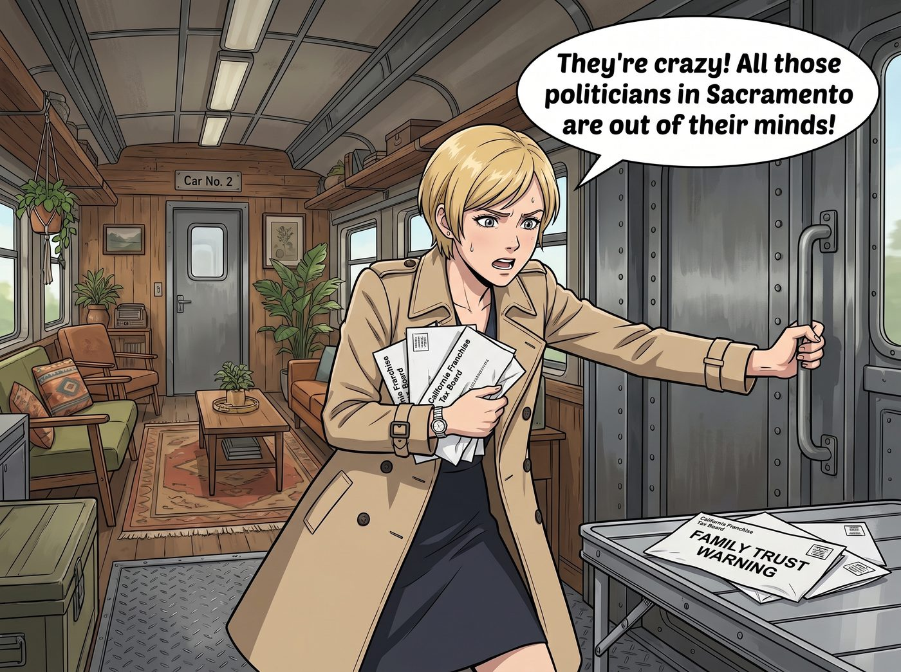
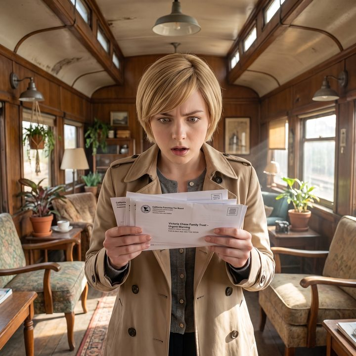

資產的量子態重構


二號車廂的寧靜，被一陣高跟鞋急促踩踏金屬地板的聲音打破了。
Victoria Chase，穿著一身剪裁得體的風衣，手裡攥著幾份加州特許經營稅務局的信函和家族信託的內部警告，氣急敗壞地推開了車廂門。
一、切香腸戰術
「瘋了！薩克拉門托的那群政客全瘋了！」Victoria 把那疊文件狠狠摔在露營桌上，精緻的妝容也掩蓋不住她的焦慮。「我爸媽的私人財富管理團隊今早發了紅色預警。加州議會正在秘密起草一份超級富豪財產稅的初步草案，他們打算對未實現的資本利得和固定資產強行徵稅！家族智囊團說，這是切香腸戰術——先用百分之一試水溫，過幾年絕對會飆升到百分之五以上！我爸甚至已經在看邁阿密和內華達的別墅了，他想逼我關掉在洛杉磯剛籌備好的獨立畫廊，把資產全部轉移到特拉華州去！」
正癱在沙發上打電動的 Chloe 吹了個響亮的口哨：「哦呼，加州終於要對你們這些吸血的百分之一資本家下刀了？太棒了，我這就去開瓶啤酒慶祝一下。納稅吧，Chase 大小姐，這叫財富重分配。」
「妳閉嘴，Chloe！妳懂什麼叫流動性危機嗎？」Victoria 氣得渾身發抖，「畫廊的藝術品估值是虛的，但我得拿真金白銀去交那個見鬼的財產稅！如果他們按最高估值徵稅，我每年得白白交出去幾百萬！我才剛想擺脫家族的陰影獨立創業，這簡直是把我的畫廊扼殺在搖籃裡！而且如果這波稅制真的過了，連帶我們車廂工坊這邊的投資部位也會被波及，我當初投進來的那筆錢，可不是讓政府拿去分贓的！」
「那妳學學那個賣顯卡的黃仁勳啊。」Chloe 頭也不抬地繼續按著手把，「我看新聞說他大方表態要繳，預計要繳八十億美金,反正他公司現金流那麼猛，繳完再賺回來不就好了，妳這麼緊張幹嘛？」
「妳這是拿蘋果比橘子，Chloe。」Victoria 沒好氣地瞪了她一眼，語氣裡帶著一種被外行冒犯到的不耐煩，「黃仁勳的公司每個季度都在印鈔票，晶片賣出去就是實打實的現金入帳，繳完稅隔幾個月現金流又補回來了，那叫『富人的從容』。但我的畫廊呢？藝術品的估值是紙上富貴，商業地產更是死錢，我沒有一條每季度穩定噴現金的產線可以填補這個窟窿！如果按最高估值徵稅，我得真的去賤賣手裡的畫作或者抵押地產才能湊出稅款，這叫『資產富有、現金貧窮』，跟晶片公司的商業模式根本是兩個宇宙的東西！」
Chloe 被說得一愣，摸了摸鼻子，識趣地閉上了嘴巴，重新專心打起了遊戲。
二、家人的出手
「Victoria 學姐，請先喝杯洋甘菊茶，這有助於降低皮質醇。」
一雙蒼白纖細的小手遞過來一個精緻的骨瓷茶杯。Lily 穿著她那件萬年不變的米色針織衫，圓框眼鏡後的眼神平靜得像是一潭死水。她優雅地拿起桌上那疊文件，一目十行地掃過那些複雜的稅務預警。
「嗯，非常典型的漸進式剝奪模型。」Lily 推了推眼鏡，「加州的財政赤字已經到了臨界點。從幾年前開始提高最高邊際稅率，到後來的嚴格審計，再到您提到的這個未來的超級富豪稅草案……這確實是一場謀劃已久的切香腸戰術。」
Victoria 緊緊握著茶杯，指關節發白：「連 Peter Thiel 都已經把家族投資公司遷去邁阿密了！Lily，妳說我該怎麼辦？我不想去佛羅里達那種充滿了暴發戶和短吻鱷的鬼地方開畫廊！但我也不想破產，更不想連累車廂工坊的財務！」
Chloe 在旁邊冷笑：「這就是有錢人的煩惱嗎？」
「Chloe 學姐，Victoria 學姐的畫廊出了問題，我們整個工坊的資金部位也會受影響，這不是別人的閒事。」Lily 溫柔卻堅定地制止了 Chloe，然後轉向 Victoria，嘴角勾起一抹深不可測的微笑，「Victoria 學姐，既然妳是我們車廂工坊的合夥人，這件事我當然要幫妳一起處理。逃跑，是那些只懂二進位程式碼的矽谷暴發戶才會做的蠢事。真正的老錢和行政黑魔法師，從來不懼怕稅法。我們只會利用稅法，把它變成護城河。」
Victoria 愣住了：「妳……妳有辦法讓我的畫廊留在加州，還能避開這個見鬼的財產稅？」
「不是避稅，學姐，這兩個字在合規領域是非常危險的。」Lily 豎起一根手指，糾正道，「我們要做的是資產的量子態重構。」
三、三步走的護城河
Lily 打開筆記本電腦，劈裡啪啦地敲擊著鍵盤，屏幕上出現了一個複雜的實體架構圖。
「第一步，切斷物理存在與法律所有權的連結。」Lily 指著屏幕：「我們立刻在南達科他州為您設立一個不可撤銷朝代信託。南達科他州沒有州所得稅、沒有資本利得稅，更重要的是，它有全美最強的資產保護法。您的洛杉磯畫廊裡的所有藝術品，法律所有權全部轉移到這個信託名下。」
Victoria 皺起眉頭：「那我的畫廊不就成了一個空殼？」
「沒錯，一個極度貧窮的空殼。」Lily 甜美地笑了，「您在加州的畫廊，將不再擁有這些畫作。它只是以每年一美元的價格，從南達科他州的信託那裡借展這些藝術品。當加州稅務局的人帶著計算器來徵收財產稅時，您只需攤開手告訴他們：抱歉，這裡的畫我一幅都買不起，我只是個熱愛藝術的佈展人。」
坐在沙發上的 Chloe 手把都掉到了地上，目瞪口呆地聽著這番喪心病狂的操作。
「第二步，對抗估值剝削。」Lily 繼續說道：「藝術品最怕的就是被稅務局惡意高估。為了應對未來的富豪稅，我們將為您的畫廊註冊一個非營利性附屬基金會，名為『加州邊緣青年藝術啟蒙計畫』——當然，主理人還是您。」
「這有什麼用？」Victoria 完全被帶入了 Lily 的節奏。
「如果稅務局把某幅畫估值一百萬美元，試圖向您徵稅，您就立刻將這幅畫的所有權捐贈給您自己的非營利基金會。這幅畫不僅不用交財產稅，還能為您產生一百萬美元的慈善抵稅額度，用來抵消您商業地產的稅單。」Lily 喝了一口熱牛奶，平靜地說出最殘忍的資本運作：「而這幅畫，從頭到尾都沒有離開過您畫廊的牆壁。它只是在法律意義上，從Victoria的私人財產，變成了Victoria管理的公共慈善財產。」
Victoria 的眼睛越睜越大，呼吸開始急促。她看著 Lily，就像在看一個披著人皮的惡魔。
「第三步，商業地產的降維打擊。」Lily 推了推眼鏡，「您父母擔心商業地產被徵收重稅。很簡單，我們重新定義這塊地產。在畫廊的頂樓安裝幾塊次世代商用太陽能實驗板，在後院種一片符合加州本土生態保護目錄的稀有苔蘚。然後，我們向市政府申請綠色生態與文化雙重豁免區。這樣一來，您的商業地產在稅法上就變成了環保與文化基礎設施。他們不僅不能向您收富豪稅，甚至還得每年給您發一筆城市文化生態補貼。」
四、身分的重塑
車廂裡死一般的寂靜。
Max 默默地舉起拍立得，咔嚓一聲，拍下了 Victoria 那副世界觀被徹底重塑的震撼表情。
「所以……」Victoria 嚥了一口唾沫，聲音微微發抖，「當 Larry Page 和 Sergey Brin 為了躲避這波稅制，狼狽地把家搬到邁阿密，還要被媒體痛罵是逃稅的無良富豪時……」
「而您，Victoria 學姐，」Lily 乖巧地接過話頭，雙手交疊在膝蓋上，「將繼續優雅地喝著洛杉磯的冷萃咖啡，站在您的畫廊裡。您的身分將不再是吸血的億萬富翁繼承人，而是將畢生財富捐獻給信託、投身於環保與青年藝術教育的偉大慈善家。加州的媒體會為您唱讚歌，政客會為您頒發市民勳章，而您的實際控制資產，一分錢都不會少。」
Lily 抬起頭，那雙純潔無瑕的眼睛裡閃爍著行政黑魔法的終極奧義：「切香腸戰術是很可怕。但如果我們把香腸變成了國家級受保護的素食主義胡蘿蔔，他們連刀都找不到在哪裡下。」
「砰！」Chloe 狠狠地用頭撞了一下前面的茶几，發出痛苦的呻吟：「我恨這個世界。我真的恨這個世界。為什麼一個十九歲的書呆子，比華爾街所有的吸血鬼加起來還要邪惡？！」
五、共同守護的資產
Victoria 則完全無視了 Chloe。她踩著高跟鞋，快步走到 Lily 面前，一把抓住 Lily 蒼白的小手，眼神中燃燒著感激與狂熱交織的光芒。
「Lily。」Victoria 激動得聲音都在顫抖，「我父母的那個家族智囊團，全是一群只會逃跑的白癡。從今天起，我畫廊的所有法務、稅務和信託架構，我想全權交給妳來處理！」
「這是應該的，Victoria 學姐。」Lily 依然保持著那副純良的微笑，「妳是這個車廂工坊最重要的資金支柱，保護妳的資產，就是保護我們大家共同的家。這件事不需要什麼正式合約，我這就開始著手準備信託和基金會的文件，明天就能給妳初稿。」
看著 Lily 轉身認真地開始整理架構圖，準備熬夜寫文件，Max 默默地將相機放下。
她轉過頭，看著還在抱頭痛哭、信仰崩塌的 Chloe，輕聲說道：「Chloe，妳知道最可怕的是什麼嗎？」
「什麼？」Chloe 絕望地問。
Max 看著正在一絲不苟地畫著架構圖的 Lily，打了個冷顫：「那些億萬富翁以為自己用搬家打敗了加州政府……但 Lily 甚至還沒出新手村，就已經在把加州政府和億萬富翁一起放在她的試算表裡，當作提供免費太陽能板和營運資金的NPC了。」